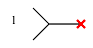

Prev
Current Sine Generator
Up
Built-in Devices (Parts)
Measure Probe
Next
Port

Property Name
Type
Keyword
Units
(Default) Value
port number
int
?
The port is used in
S-parameter Generation↑
and
Deembedding↑
applications to define locations where waves enter and exit the system.
In
S-parameter Generation↑
, they define the how the s-parameters will be produced. For example Sxy will be the reflected wave at port x due to the incident wave at port y, with all other ports terminated in the reference impedance. See
Attaching Ports to a Schematic for S-parameter Calculation↑
.
In
Deembedding↑
, they match the port numbers in the circuit with the ports on the
System↓
. See
Attaching Ports to a Schematic for Deembedding↑
They are added to the schematic with the
Add Port↑
command.
Prev
Current Sine Generator
Up
Built-in Devices (Parts)
Measure Probe
Next